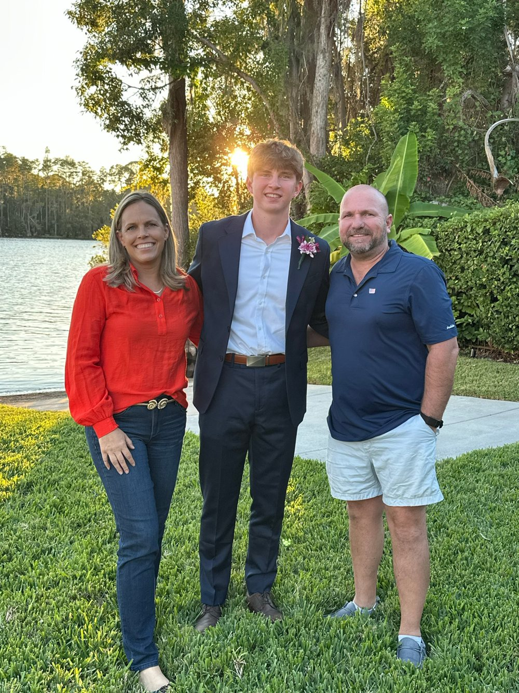

Team Schultz
The family behind Raising a Baller

Ashley and her husband, Ragen, have spent years navigating youth sports as parents, from practices, travel, school demands, and team changes to injuries, recovery, difficult decisions, and the emotional highs and lows that happen behind the scenes.
Their experiences raising Brian shaped the questions at the center of Raising a Baller. How can parents support an athlete's ambition without allowing sports to define their worth? How can families keep perspective when each season feels urgent? What lessons will remain when the games eventually end?
Team Schultz does not claim to have handled every moment perfectly. The perspective behind Raising a Baller comes from living the journey, reflecting on it honestly, and sharing what may help other families navigate it with greater intention.
"This isn't just about raising successful athletes. It's about raising good people who happen to love the game."